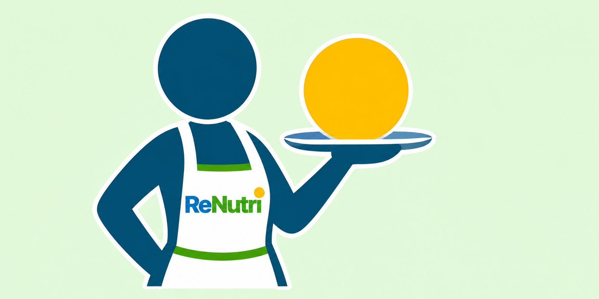
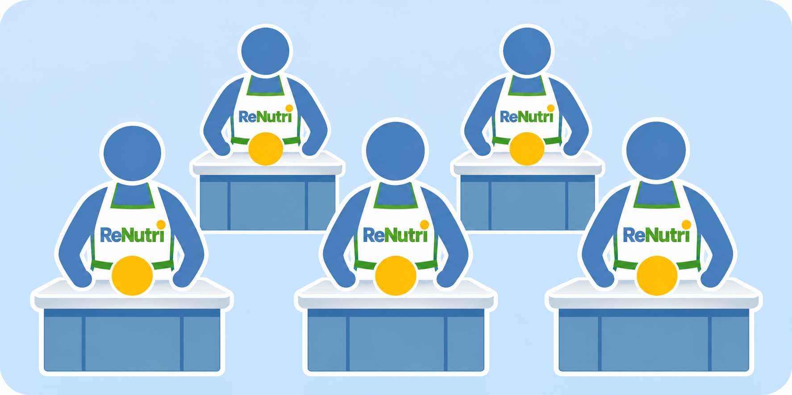

For Individuals
Peer Support & Nutrition Coaching
One on one private consultations services for nutrition and recovery.
Learn MoreDiscover practical nutrition education, everyday cooking skills, and accessible resources to help build a healthier foundation for recovery.

ReNutri stands for Recovery with Nutrition—emphasizing the importance of daily food habits and informed choices to improve self-esteem, build self-confidence, and facilitate personal growth and empowerment.
Educational programs designed for all levels. We simplify the link between proper diet and positive mental health outcomes.
We understand our audience because we were once in the crowd. Certified peer support specialists with credentials in the field of nutrition at your service.
Our programs and services are adaptable to every individual, group, or organization.

One on one private consultations services for nutrition and recovery.
Learn More
Evidence-based nutrition programming for organizations, community groups, and recovery programs.
Learn More
Media inquiries, publications, partnerships, and other requests.
Learn MoreNew downloadable guides and activities are planned for this space.
From simple snacks to satisfying meals, ReNutri is creating illustrated recipes and step-by-step cooking guides designed to make learning easier.
Our RecipesWe would really like to hear from you.
This form sends your message through Netlify Forms when the website is deployed on Netlify. Please don't include sensitive health information.